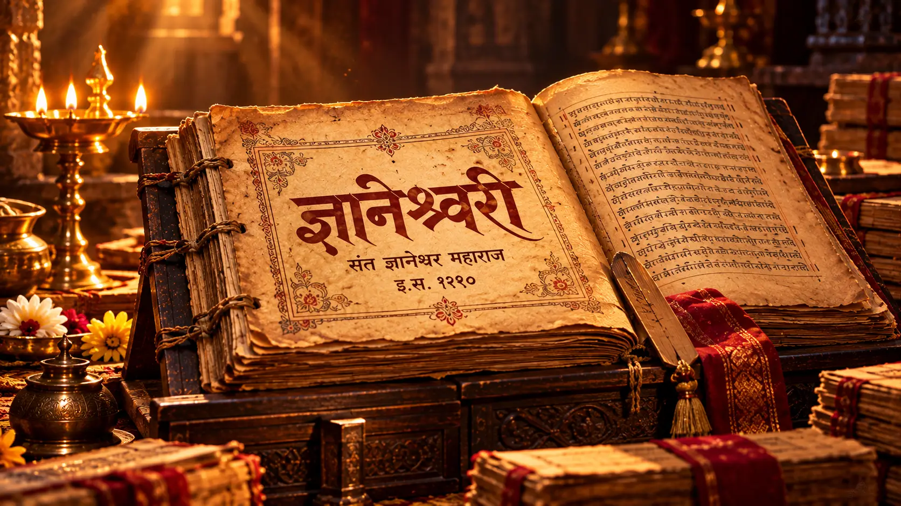

संत ज्ञानेश्वर माऊली आणि ज्ञानेश्वरी — मराठी संतसाहित्याचा अमूल्य वारसा
भाद्रपद वद्य षष्ठी हा दिवस वारकरी परंपरेत ज्ञानेश्वरी जयंती म्हणून स्मरणात ठेवला जातो. पण या दिवसाकडे केवळ “ज्ञानेश्वरीचा वाढदिवस” म्हणून पाहिले, तर त्यामागची एक महत्त्वाची ऐतिहासिक गोष्ट आपल्या लक्षात येत नाही.
संत ज्ञानेश्वर महाराजांनी इ.स. १२९० मध्ये नेवासे येथे भगवद्गीतेवर ज्ञानेश्वरीची रचना केली. मात्र आज ज्या भाद्रपद वद्य षष्ठीला ज्ञानेश्वरी जयंती साजरी केली जाते, तिचा संबंध पुढील काळात संत एकनाथ महाराजांनी केलेल्या ज्ञानेश्वरीच्या शुद्धीकरणाशी जोडला जातो. म्हणून हा दिवस ग्रंथनिर्मितीइतकाच ग्रंथसंवर्धनाचाही स्मरणदिन आहे.
या लेखात आपण शुभेच्छांपुरते न थांबता ज्ञानेश्वरीच्या मागची कथा, तिची निर्मिती, तिचे नाव, सच्चिदानंद बाबांची भूमिका, एकनाथ महाराजांचे कार्य आणि सामान्य माणसासाठी ज्ञानेश्वरीचा खरा अर्थ समजून घेणार आहोत.
या लेखात काय वाचाल?
१. ज्ञानेश्वरी म्हणजे नेमके काय? २. ज्ञानेश्वरी लिहिण्याची गरज का पडली? ३. ज्ञानेश्वरी कधी आणि कुठे लिहिली? ४. ज्ञानेश्वरी कोणी लिहिली आणि लेखन कोणी केले? ५. ज्ञानेश्वरी जयंतीचा खरा इतिहास ६. ज्ञानेश्वरीची रचना कशी आहे? ७. ज्ञानेश्वरीत नेमके काय दिले आहे? ८. ज्ञानेश्वरीतील “गूढ” काय आहे? ९. आजच्या माणसासाठी ज्ञानेश्वरी का महत्त्वाची? १०. पुढे काय वाचावे?ज्ञानेश्वरी म्हणजे नेमके काय?
ज्ञानेश्वरी हा संत ज्ञानेश्वर महाराजांनी श्रीमद्भगवद्गीतेवर केलेला मराठीतील ओवीबद्ध भावार्थ आहे. या ग्रंथाला भावार्थदीपिका आणि ज्ञानदेवी अशीही नावे आढळतात.
एक महत्त्वाची गोष्ट म्हणजे “ज्ञानेश्वरी” हे नाव स्वतः ज्ञानेश्वरांनी या ग्रंथाला दिले असे ठामपणे सांगता येत नाही. मराठी विश्वकोशानुसार संत नामदेवांनी या ग्रंथाचा उल्लेख “ज्ञानदेवी”, “ज्ञानेश्वरी” आणि “गीताटीका” अशा नावांनी केला आहे; त्यामुळे पुढे ही नावे रूढ झाली असावीत.
म्हणून ज्ञानेश्वरीला फक्त “भगवद्गीतेचा मराठी अनुवाद” म्हणणे अपुरे ठरेल. हा गीतेच्या तत्त्वज्ञानाचा काव्यमय, संवादात्मक आणि भावार्थपूर्ण विस्तार आहे.
ज्ञानेश्वरी लिहिण्याची गरज का पडली?
भगवद्गीतेतील तत्त्वज्ञान संस्कृतमध्ये होते. ज्ञानेश्वरांनी त्या काळातील सामान्य मराठी माणसाला हे तत्त्वज्ञान समजावे, अनुभवता यावे आणि आपल्या भाषेत अध्यात्माशी जोडता यावे, अशा पद्धतीने त्याचे निरूपण केले.
त्यामुळे ज्ञानेश्वरीचा मोठा अर्थ भाषांतरापेक्षा ज्ञानाचे लोकभाषेत रूपांतर असा आहे. महाराष्ट्र शासनाच्या राज्य मराठी विकास संस्थेच्या परिचयानुसार, या ग्रंथातून संस्कृत भगवद्गीतेतील तत्त्वज्ञान मराठीत आले आणि त्याचबरोबर तत्कालीन मराठी भाषेची शब्दकळा, प्रतिमा आणि प्रतीकांची समृद्धीही प्रकट झाली.
ज्ञानेश्वरी कधी आणि कुठे लिहिली?

नेवासे — ज्ञानेश्वरीच्या रचनेशी जोडलेले ऐतिहासिक स्थळ
उपलब्ध अभ्यासस्रोतांनुसार ज्ञानेश्वरीचा रचनाकाल शके १२१२ म्हणजे इ.स. १२९० असा मानला जातो. मराठी विश्वकोश आणि महाराष्ट्र शासनाच्या अहिल्यानगर जिल्हा संकेतस्थळावर नेवासे हे ज्ञानेश्वरीच्या रचनेशी संबंधित स्थळ म्हणून नमूद आहे.
पण इथे एक सूक्ष्म मुद्दा आहे: ज्ञानेश्वरीच्या समाप्तीच्या ओवीत शके १२१२ चा कालोल्लेख आढळतो; मात्र ग्रंथ नेमक्या कोणत्या दिवशी पूर्ण झाला, याची तिथी उपलब्ध नाही. त्यामुळे “ज्ञानेश्वरी जयंती” आणि “ज्ञानेश्वरीची मूळ रचना पूर्ण झाल्याची तिथी” हे दोन्ही एकच आहेत असे म्हणणे अचूक ठरणार नाही.
नेवासे येथील पैसाचा खांब हा ज्ञानेश्वरीच्या रचनेशी जोडलेला प्रसिद्ध स्मृतिस्थळ आहे. महाराष्ट्र शासनाच्या पर्यटन माहितीनुसार इ.स. १२९० मध्ये नेवासे येथे ज्ञानेश्वरी (भावार्थदीपिका) रचली गेली आणि त्या ठिकाणाशी पैसाचा खांब जोडला जातो.
ज्ञानेश्वरी कोणी लिहिली? आणि लेखन कोणी केले?

ज्ञानेश्वरांची वाणी आणि तिचे लिखित रूप — परंपरेतील सच्चिदानंद बाबांचा संदर्भ
हा प्रश्न वरवर सोपा वाटतो; पण याचे उत्तर दोन भागांत समजून घ्यावे लागते. ज्ञानेश्वरीची रचना संत ज्ञानेश्वर महाराजांनी केली. मात्र ज्ञानेश्वरांनी सांगितलेले निरूपण लिखित स्वरूपात नोंदवण्याच्या परंपरेत सच्चिदानंद बाबा यांचा उल्लेख येतो.
मराठी विश्वकोशातील नोंदीनुसार नेवासे येथील सच्चिदानंद बाबा हे ज्ञानेश्वरी लिहून घेणारे म्हणून परंपरेत ओळखले जातात. मात्र आज त्यांच्या हस्ताक्षरातील किंवा त्याच काळातील ज्ञानेश्वरीची प्रत उपलब्ध नाही. त्यामुळे या बाबतीत “रचना करणारे” आणि “लिहून घेणारे” अशी भूमिका वेगळी सांगणे अधिक अचूक आहे.
ग्रंथाच्या अखेरीस आढळणाऱ्या कालोल्लेखाबाबत अभ्यासकांनी काही पाठविषयक प्रश्न उपस्थित केले आहेत. म्हणून या ओवीचा उल्लेख करताना तिच्या ऐतिहासिक संदर्भाबद्दल सावधपणे बोलणे आवश्यक आहे.
ज्ञानेश्वरी जयंतीचा खरा इतिहास — हा मुद्दा अनेकांना माहीत नाही

ज्ञानेश्वरी जयंतीबद्दल सर्वात महत्त्वाचा गैरसमज असा आहे की भाद्रपद वद्य षष्ठी हाच दिवस संत ज्ञानेश्वरांनी ज्ञानेश्वरी पूर्ण केलेला दिवस आहे. उपलब्ध अभ्यासस्रोत याला थेट पुष्टी देत नाहीत.
ज्ञानेश्वरीचा रचनाकाल इ.स. १२९० असा निश्चितपणे सांगितला जातो; पण मूळ रचनेची तिथी उपलब्ध नाही. पुढे अनेक प्रतिलिपींमधून पाठभेद आणि अपपाठ निर्माण झाले. संत एकनाथ महाराजांनी ज्ञानेश्वरीची शुद्ध प्रत तयार केली. मराठी विश्वकोशानुसार एकनाथांनी ग्रंथातील पुढे आलेले अपपाठ दूर करण्यासाठी शुद्ध प्रत तयार केली.
वारकरी परंपरेतील ज्ञानेश्वरी जयंतीचा संबंध याच ग्रंथशुद्धी/परिष्करणाच्या स्मरणाशी जोडला जातो. संत एकनाथांच्या लेखनातील “भाद्रपद मास कपिलाषष्ठी” हा कालसंदर्भ या परंपरेच्या चर्चेत महत्त्वाचा मानला जातो.
म्हणूनच या दिवसाला “ज्ञानेश्वरी जयंती” म्हटले जाते; पण अभ्यासपूर्ण भाषेत “ज्ञानेश्वरी परिष्करण दिन” असे म्हणणेही अधिक नेमके ठरू शकते. जयंती ही येथे ग्रंथाच्या पुनःशुद्धीकरणाची आणि जतनाची स्मृती आहे.
हा फरक लक्षात घेतला की ज्ञानेश्वरी जयंतीचे महत्त्व अधिक खोल होते: ग्रंथ निर्माण करणाऱ्या माऊलींचे स्मरण आणि त्या ग्रंथाला पुढच्या पिढ्यांसाठी जतन करणाऱ्या संत एकनाथांचे ऋणस्मरण — दोन्ही एका परंपरेत जोडले जातात.
ज्ञानेश्वरीची रचना कशी आहे?

ज्ञानेश्वरीमध्ये भगवद्गीतेच्या १८ अध्यायांचे ओवीबद्ध निरूपण आहे. महाराष्ट्र शासनाच्या राज्य मराठी विकास संस्थेने वापरलेल्या प्रमाणित आवृत्तीमध्ये ९०३४ ओव्या नमूद आहेत.
ज्ञानेश्वरी वाचताना एक गोष्ट जाणवते: हा कोरडा तत्त्वज्ञानग्रंथ नाही. ज्ञानेश्वर उदाहरणे, उपमा, निसर्गदृश्ये, दैनंदिन अनुभव आणि संवाद यांच्या मदतीने गीतेतील सूक्ष्म विचार उलगडतात. त्यामुळे “कर्म”, “आत्मा”, “ज्ञान”, “भक्ती”, “समत्व” यांसारखे शब्द केवळ तात्त्विक संकल्पना राहत नाहीत; ते जगण्याच्या प्रश्नांशी जोडले जातात.
परि अमृतातेही पैजा जिंके ।”
या ओळी ज्ञानेश्वरांच्या भाषिक आत्मविश्वासाची आणि मराठीला अध्यात्मिक अभिव्यक्तीचे समर्थ माध्यम बनवण्याच्या त्यांच्या दृष्टीची झलक देतात.
ज्ञानेश्वरीत नेमके काय दिले आहे?
१. कर्म — कामापासून पळणे नव्हे
ज्ञानेश्वरीतील कर्मविचाराचा अर्थ फक्त “काम करत राहा” एवढा साधा नाही. कर्म करताना मनाची भूमिका काय असावी, अहंकार आणि फळाची आसक्ती मनाला कशी बांधते आणि स्वधर्माचा विचार कसा करावा, हे गीतेच्या संदर्भातून उलगडले जाते.
२. ज्ञान — माहितीपेक्षा अनुभव
ज्ञानेश्वरीतील ज्ञान हे केवळ पुस्तकातील माहिती नाही. स्वतःचे स्वरूप, जगाशी असलेले नाते आणि परमसत्य यांचा अनुभवात्मक विचार हा तिच्या तत्त्वज्ञानाचा केंद्रबिंदू आहे.
३. भक्ती — भावनेतून एकत्वाकडे
भक्ती म्हणजे केवळ विधी नव्हे. देव आणि भक्त यांच्यातील अंतर कमी होत जाणे, सर्वत्र एकच चैतन्य पाहण्याची दृष्टी आणि अहंकाराचा क्षय हा तिचा अधिक खोल अर्थ आहे.
४. समत्व — सुख-दुःखाच्या पलीकडची दृष्टी
जीवनात परिस्थिती सतत बदलत असते. ज्ञानेश्वरीचा विचार माणसाला बाह्य परिस्थितीवर पूर्ण नियंत्रण मिळवण्याऐवजी स्वतःच्या अंतःकरणाकडे पाहायला शिकवतो.
ज्ञानेश्वरीतील “गूढ” काय आहे?
“ज्ञानेश्वरीतील गूढ” म्हणजे एखादे रहस्यमय किंवा गुप्त मंत्र नव्हे. तिचे गूढ तिच्या अर्थाच्या अनेक स्तरांत आहे.
एखादी ओवी प्रथम वाचली तर ती साधी वाटू शकते. दुसऱ्यांदा तिच्यात जीवनाचा अर्थ दिसतो. तिसऱ्यांदा मन, अहंकार, कर्म आणि आत्मज्ञान यांचा संबंध जाणवतो. आणि चिंतन वाढले की “मी” आणि “विश्व” यांच्यातील संबंधाचा प्रश्न उभा राहतो. हीच ज्ञानेश्वरीची खोली आहे.
एक महत्त्वाचा धागा — विश्वात्मक दृष्टी
ज्ञानेश्वरीचा शेवट स्वतःसाठी काही मागण्यात होत नाही. पसायदानातून ज्ञानेश्वर संपूर्ण विश्वाच्या कल्याणाची इच्छा व्यक्त करतात. त्यामुळे आत्मज्ञानाचा शेवट वैयक्तिक अहंकारात न होता सर्वांच्या कल्याणाच्या भावनेत होतो, असा तिच्या समारोपातून अर्थ लावता येतो.
म्हणून ज्ञानेश्वरीचा अभ्यास करताना “मला यातून काय मिळेल?” हा प्रश्न हळूहळू “माझ्या ज्ञानाचा आणि आचरणाचा इतरांच्या जीवनाला काय उपयोग?” या प्रश्नात बदलतो. पसायदानाची व्यापकता या परिवर्तनाकडे निर्देश करते.
आजच्या माणसासाठी ज्ञानेश्वरी का महत्त्वाची?
सातशेहून अधिक वर्षांपूर्वीचा ग्रंथ आजच्या माणसाला काय देऊ शकतो? हा प्रश्न विचारणे स्वाभाविक आहे.
- ताण आणि अस्थिरता: बाह्य परिस्थिती बदलत असताना मनाची भूमिका समजून घेण्याची दृष्टी.
- काम आणि जबाबदारी: कर्म, कर्तव्य आणि आसक्ती यांचा विचार.
- यश-अपयश: परिणामांपलीकडे प्रयत्न आणि अंतर्मनाचा विचार.
- अहंकार: “मी” केंद्रित दृष्टीऐवजी व्यापक अस्तित्वाचा विचार.
- समाजजीवन: स्वतःच्या कल्याणाबरोबर सर्वांच्या कल्याणाची भावना.
त्यामुळे ज्ञानेश्वरी ही फक्त पूजा करून कपाटात ठेवण्याची वस्तू नाही. तिचा खरा उपयोग वाचणे, समजून घेणे, प्रश्न विचारणे आणि आचरणात उतरवणे यात आहे.
ज्ञानेश्वरीबद्दल पुढे काय वाचावे?
ज्ञानेश्वरीचा इतिहास समजून घेतल्यानंतर माऊलींचे जीवन आणि त्यांचे विचार अधिक चांगल्या प्रकारे समजून घेण्यासाठी पुढील दोन लेख/संग्रह वाचणे उपयुक्त ठरेल:
→ संत ज्ञानेश्वर महाराज संपूर्ण जीवनचरित्र
→ सार्थ ज्ञानेश्वरी — संपूर्ण १८ अध्याय अर्थासहित
आधी चरित्र वाचा, नंतर ज्ञानेश्वरीतील संबंधित अध्याय वाचा — अशा क्रमाने अभ्यास केल्यास ग्रंथातील संदर्भ अधिक स्पष्ट होतात.
ज्ञानेश्वरी जयंतीचा खरा संदेश

ज्ञानेश्वरी जयंती म्हणजे केवळ एका प्राचीन ग्रंथाची आठवण करण्याचा दिवस नाही. हा दिवस आपल्याला तीन गोष्टींची आठवण करून देतो — ज्ञान निर्माण करणारी माऊलींची प्रतिभा, ते ज्ञान लोकभाषेत पोहोचवण्याची दृष्टी आणि पुढच्या पिढ्यांसाठी ते जतन करणाऱ्या संतपरंपरेचे कार्य.
नेवासेच्या पैसाच्या खांबापासून आळंदीच्या समाधीपर्यंत आणि एका ओवीपासून पसायदानापर्यंत ज्ञानेश्वरीचा प्रवास हा केवळ साहित्याचा प्रवास नाही. तो ज्ञानातून आत्मपरीक्षणाकडे आणि आत्मपरीक्षणातून विश्वकल्याणाकडे जाणारा प्रवास म्हणूनही वाचता येतो.
विश्व स्वधर्म सूर्ये पाहो ।”
॥ श्री ज्ञानेश्वर माऊलींच्या चरणी कोटी कोटी प्रणाम ॥
॥ ज्ञानेश्वरी जयंतीनिमित्त सर्वांना मंगलमय शुभेच्छा ॥
वारंवार विचारले जाणारे प्रश्न
ज्ञानेश्वरी कोणी लिहिली?
ज्ञानेश्वरीची रचना संत ज्ञानेश्वर महाराजांनी केली. त्यांच्या सांगितलेल्या निरूपणाचे लिखित स्वरूप सच्चिदानंद बाबांनी करून घेतल्याचा परंपरागत उल्लेख आहे.
ज्ञानेश्वरी कधी लिहिली?
ज्ञानेश्वरीचा रचनाकाल शके १२१२ म्हणजे इ.स. १२९० असा मानला जातो. मात्र मूळ रचना नेमक्या कोणत्या तिथीला पूर्ण झाली याचा निश्चित तिथी-उल्लेख उपलब्ध नाही.
ज्ञानेश्वरी कुठे लिहिली?
ज्ञानेश्वरीची रचना नेवासे येथे झाल्याचे मराठी विश्वकोश आणि महाराष्ट्र शासनाच्या स्रोतांमध्ये नमूद आहे. नेवासेतील पैसाचा खांब या परंपरेशी जोडला जातो.
ज्ञानेश्वरीचे दुसरे नाव काय आहे?
भावार्थदीपिका आणि ज्ञानदेवी ही ज्ञानेश्वरीची पर्यायी नावे म्हणून आढळतात.
ज्ञानेश्वरीमध्ये किती अध्याय आहेत?
ज्ञानेश्वरीमध्ये भगवद्गीतेच्या १८ अध्यायांचे ओवीबद्ध निरूपण आहे.
ज्ञानेश्वरीमध्ये किती ओव्या आहेत?
महाराष्ट्र शासनाच्या राज्य मराठी विकास संस्थेने वापरलेल्या प्रमाणित आवृत्तीमध्ये ९०३४ ओव्या नमूद आहेत. वेगवेगळ्या पाठांमध्ये संख्या/पाठभेदाबाबत फरक दिसू शकतो.
ज्ञानेश्वरी जयंती कधी साजरी केली जाते?
वारकरी परंपरेत भाद्रपद वद्य षष्ठीला ज्ञानेश्वरी जयंती साजरी केली जाते. या तिथीचा संबंध संत एकनाथ महाराजांनी केलेल्या ज्ञानेश्वरीच्या शुद्धीकरण/परिष्करणाच्या स्मृतीशी जोडला जातो.
ज्ञानेश्वरी म्हणजे भगवद्गीतेचा साधा मराठी अनुवाद आहे का?
नाही. ज्ञानेश्वरी ही भगवद्गीतेवरील मराठी ओवीबद्ध भावार्थात्मक टीका आहे. ज्ञानेश्वरांनी गीतेतील तत्त्वज्ञान अनेक उदाहरणे, उपमा आणि संवादाच्या माध्यमातून विस्ताराने उलगडले आहे.
ज्ञानेश्वरीतील पसायदान काय सांगते?
ज्ञानेश्वरीच्या शेवटी पसायदानातून विश्वकल्याण, सद्बुद्धी, दुरितांचा नाश आणि सर्वांच्या सुखाची व्यापक प्रार्थना व्यक्त होते.